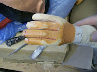
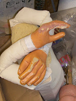
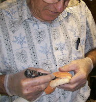
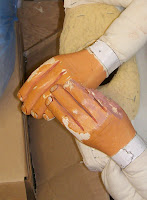

Give the dog a Bone!
2/18/2010
{kind=link}

{kind=link}

{kind=link}

{kind=link}

At least a half dozen times I have been asked to repair vent figures that have been damaged by dogs who have decided an unattended dummy would make a good chew toy. Recently it happened again with this figure who arrived missing a couple fingers plus multiple bite marks on the hands.
I rebuilt the missing and damaged fingers and repainted both hands. It took more time to repair the hands than it would have to replace the hands entirely, but I thought it important to keep these hand carved wooden hands with their unique artistry. Plus, their classic style was a much better match to the head (a Foy Brown figure) than any of the modern molded hands would have provided. (All photos show the hand as they are being repaired. I failed to get a photo of the finished job - sorry.)
I rebuilt the missing and damaged fingers and repainted both hands. It took more time to repair the hands than it would have to replace the hands entirely, but I thought it important to keep these hand carved wooden hands with their unique artistry. Plus, their classic style was a much better match to the head (a Foy Brown figure) than any of the modern molded hands would have provided. (All photos show the hand as they are being repaired. I failed to get a photo of the finished job - sorry.)